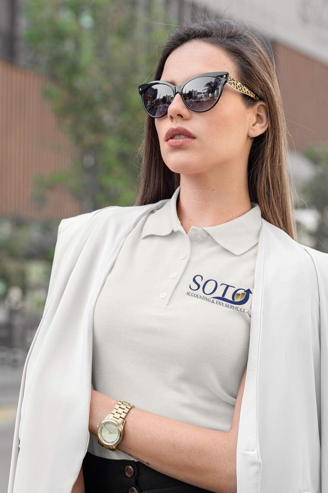
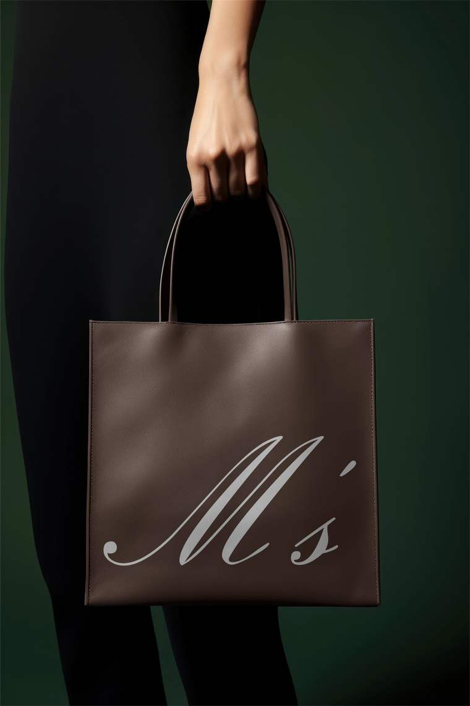
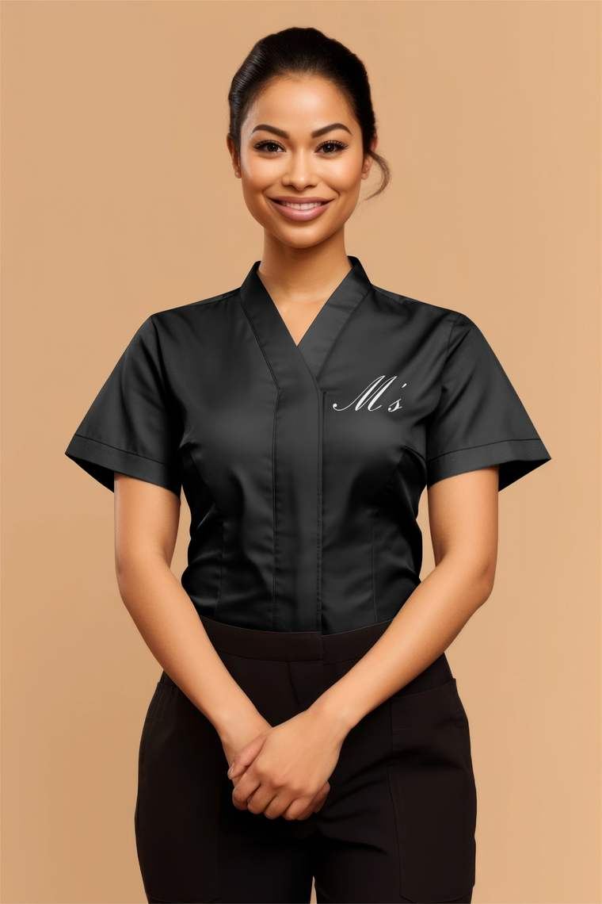
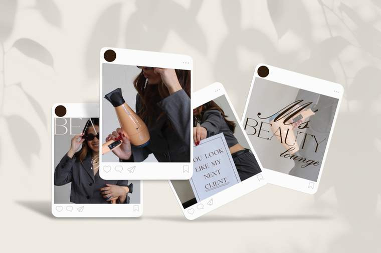
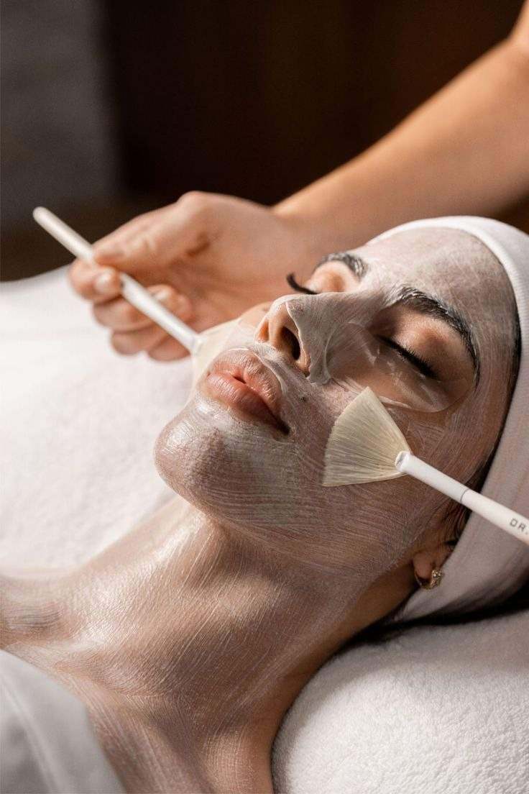
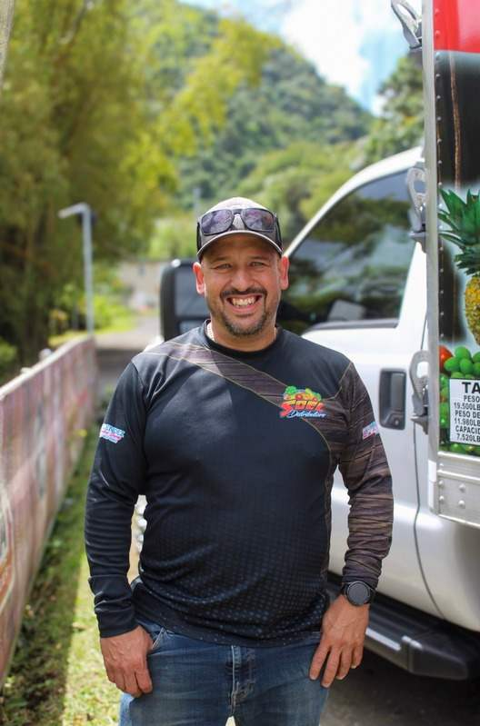
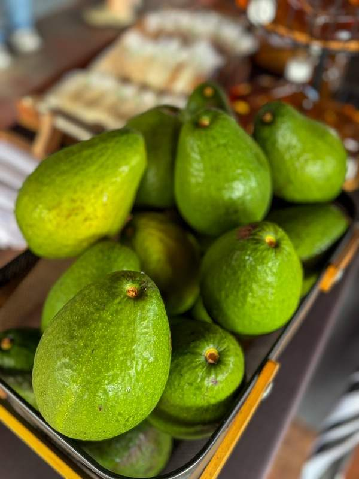
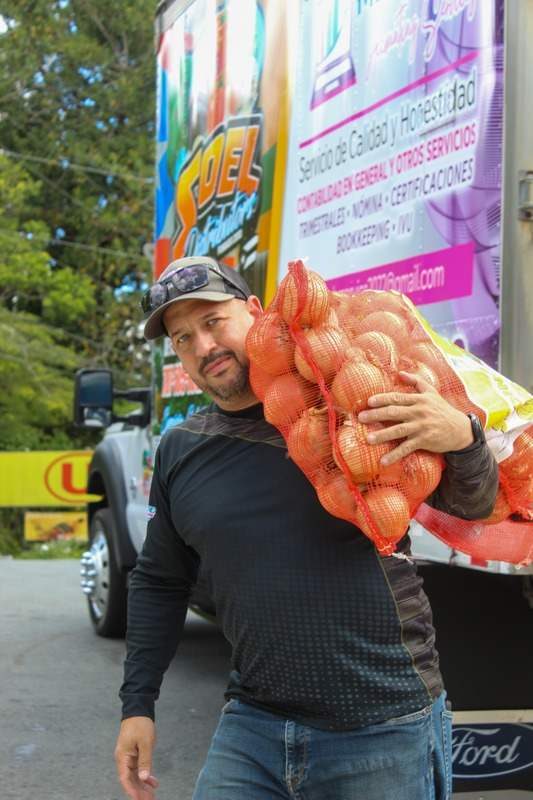
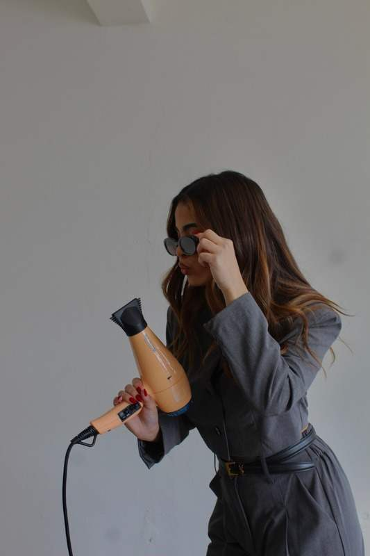

Las marcas exitosas
no son casualidad.
Cada proyecto es el resultado de una estrategia clara y una ejecución impecable. Un vistazo a las marcas que hemos ayudado a nacer, crecer y brillar.
Marcas con propósito
Soto Accounting & Tax Services
Una identidad renovada que refleja una esencia moderna y elegante, diseñada para transmitir seguridad, cercanía y confianza a cada persona que busca respaldo en sus procesos contables y fiscales.

M’s Beauty Lounge
Identidad que transmite elegancia, confianza y transformación — alineada con el nivel de servicio que sus clientas ya conocen y valoran.



JD Esthetics and Spa
Nace desde el cuidado real, la honestidad y el deseo de transformar la piel — y la confianza de cada persona que llega.

Dra. Tamara Duarte
Con una visión centrada en el cuidado de la mujer, nace la marca de una ginecóloga comprometida con acompañar a sus pacientes en cada etapa de su bienestar femenino.
Imágenes que venden
Soel Distributors Inc.
Sesión de fotografía en su ruta de distribución — capturando el producto, el proceso y la gente detrás de la marca.



M’s Beauty Lounge
Sesión de fotografía en su salón de belleza — contenido profesional para elevar su presencia y comunicar la experiencia de su marca.
